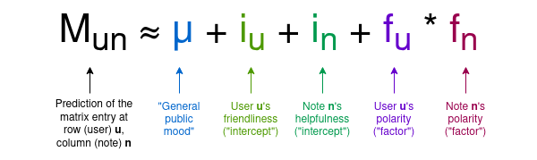
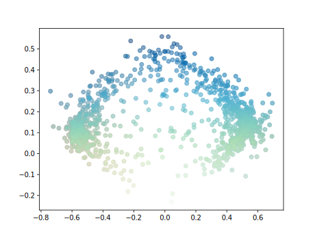
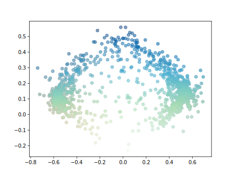
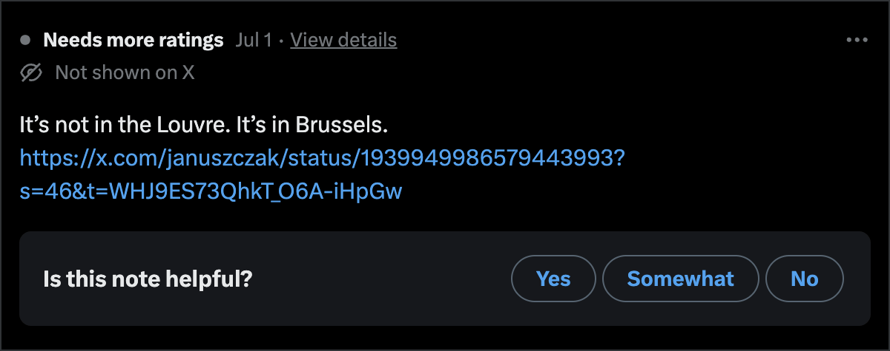
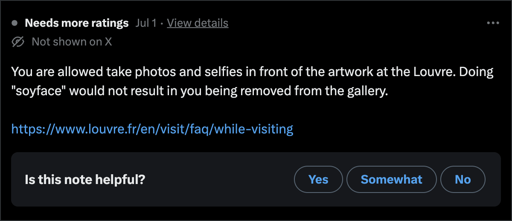
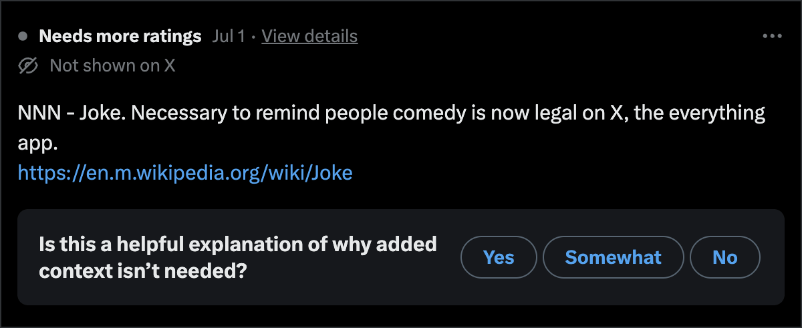
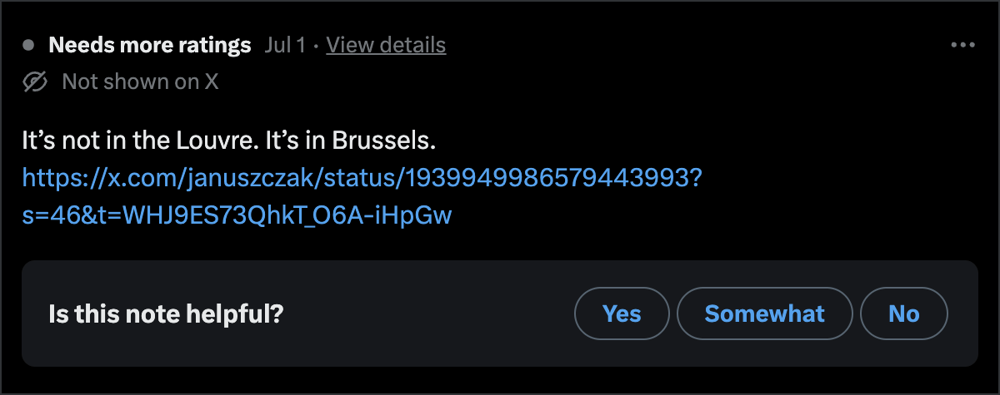
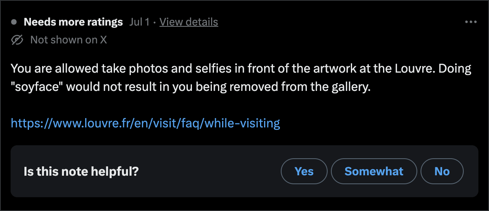
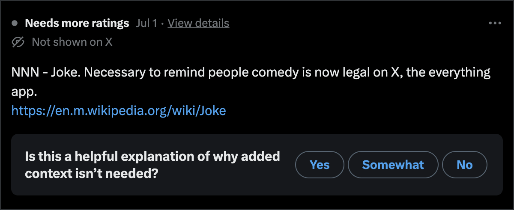

Wisdom of the cloud?
Drifting through Community Notes
EuroPython • Prague • July 17, 2025
Laura Summers & Andy
Kitchen
A quick intro

Motivating this talk
Why talk about Community Notes?
Community Notes is at the intersection of
- Technology
- Society
- Algorithms
- Scale
- Politics
Credible Neutrality?
You can run it and compare your results to those on the site

Community Notes at scale
- Twitter (X) - 611 Million monthly active users#1
- Meta apps worldwide - 3.98 billion monthly active people (MAP)#2
- Roughly 4.5 billion active users/month - people whose feeds will be moderated by Community Notes
Citations:
#1
demandsage.com/twitter-statistics
#2
cropink.com/meta-statistics
Section 1
Algorithm design
"Bridging" Algorithm
political opinions = signal
political opinions = signal
political opinions = noise
broad support = signal
Unsupervised Politics
- No inherent concept of left/right wing politics
- Political polarisation emerges naturally from data
Two Parts
- A core ranking algorithm
- Tuning and support around the core
Ranking Core
- Matrix Factorisation
- 2D Embedding model (alternative)
The formula

— Image credit: Vitalik Buterin
"What do I think about Community Notes?"
Rating the raters
| Was this note helpful? | ||
|---|---|---|
| Yes | Somewhat | No |
| 1 | 0.5 | 0 |
How ratings work


Embedding Space

 

Example #1 - Note shown
| Polarity: | 0.01 | Helpfulness: | 0.42 |
Example #2 - Note hidden
| Polarity: | -0.66 | Helpfulness: | 0.08 |
Example #3 - Note hidden
| Polarity: | 0.59 | Helpfulness: | 0.18 |
Key Ideas
Model latent political polarisation in users and notes.
Find things that are helpful to both sides.
Section 2
UX Design
Published notes
Label ontology
{
"Helpful": 0,
"Somewhat": 0.5,
"Not helpful": 0,
}
What don't they show?
- Number of raters
- Polarity score
- Helpfulness score
What we don't know
The recommendation algorithm for bubbling up notes to raters
What exactly is this system for?
- Fact checking?
- Content moderation?
- Community moderation?
I'd argue it's something else again...
Fact checking Adding context x.com/NancyMace/status/1945209117020246510
Fact checking Nit picking x.com/ApaNiIs1/status/1944562975249174942
Fact checking The reply-guy

Fact checking Ironic deafness
 





What matters most?
- Centralised authority versus distributed authority?
- Community, corporate or government policed speech?
- Good vibes, or true facts?
Algorithm design
Final thoughts
Algorithms + Politics
Active Neutrality?
A 1-Dimensional Society?
Politics as Noise?
Thank you